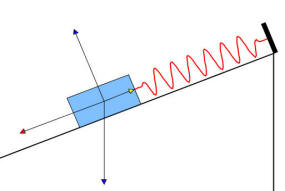
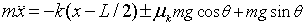
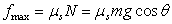

Frictional, spring, and gravitational forces act on
as block as it slides on an inclined plane.
The Block and Spring on an Inclined Plane model displays the dynamics of a mass-spring system sliding on an inclined plane with static and kinetic friction. The model shows the asymmetry caused by the change in direction of the frictional force when sliding up and down the incline and the importance of friction in establishing equilibrium. When the block is sliding, Newton's law for motion for a mass m moving along the incline of length L can be written as

where k is the spring constant in N/m, μk is the kinetic (sliding) coefficient of friction, θ is the angle of the incline, and g is the acceleration of gravity in m/s^2. We use the + sign when the block is moving to the right and - sign when the block is moving to the left. Note that the model uses a unit mass block and a natural spring length of L/2 in order to limit the number of input parameters.
The static friction force prevents motion until some limit where motion occurs. It is characterized by a static coefficient of friction μs and is equal and opposite to the net applied force less than a maximum value

where the normal force N is that component of the gravitational force that presses the block into the plane. The static coefficient of friction is harder to quantify than the kinetic coefficient but is generally larger than the kinetic coefficient and may arise from surface irregularities and surface contaminants.
The Block and Spring on an Inclined Plane model displays the numerical solution to this equation and shows how the forces change as the mass slides. The scale of the force vectors is arbitrary and that the image is rescaled as the incline plane length is varied from 0.1 to 10 m or the incline angle is changed. Users can set the coefficients of friction and the spring constant. The model plots the position, velocity, and net force on the mass as a function of time as the system evolves.
"Damped oscillations and equilibrium of a mass-spring system subjected to sliding friction forces: integrating experimental and theoretical analysis," P. Onorato, D. Mascoli, and A. DeAmbrosis, American Journal of Physics, (in press).
The Block and Spring on an Inclined Plane model was created by Wolfgang Christian using the Easy Java Simulations (EJS) version 4.3 authoring and modeling tool.
You can examine and modify a compiled EJS model if you run the model (double click on the model's jar file), right-click within a plot, and select "Open EJS Model" from the pop-up menu. You must, of course, have EJS installed on your computer. Information about EJS is available at: <http://www.um.es/fem/Ejs/> and in the OSP ComPADRE collection <http://www.compadre.org/OSP/>.